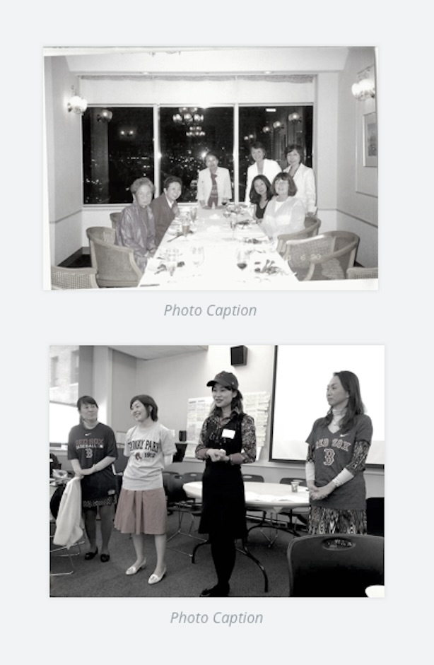

Our History
The Japanese Women's Leadership Initiative (WLI) was founded in 2006 by three visionary women in Boston,
Massachusetts: Atsuko Toko Fish, Mary Lassen, and Catherine Crone Coburn. JWLI brings emerging women
leaders, referred to as the Fellows, from Japan to Boston to receive four weeks of hands-on experience
and training with successful nonprofit organizations in nonprofit management and leadership development.
During their stay in Boston, the Fellows will develop an Action Plan, which will serve as a step-by-step
roadmap to make their dreams of social change a reality. After returning to Japan, the Fellows are
expected to make a difference in their communities based on their Action Plans. The purpose of this
program is for the fellows to share the knowledge and experience they acquired in Boston with other
women and social sector leaders within Japan.
The Fish Family Foundation, operating in conjunction with other Boston-based nonprofit organizations, is
administering /WLI in partnership with Simmons College School of Management's Center for Gender in
Organizations.
In 2010, thanks to the generous funding provided by the U.S. - Japan Foundation,
JwLI expanded its vision to nola public torums within Japan. Held In 2010, 2012 and 2013, these public
forums provided information about the nonprofit sector and the American approach to philanthropy with
hopes to inspire women to take leadership roles. The Forum Program reached hundreds of Japanese
citizens, aavocating for their invo vement in addressing une neeas or japanese society.
